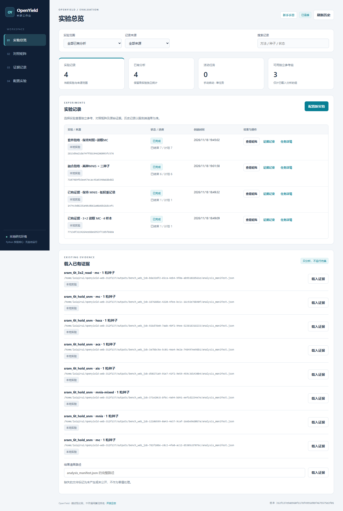
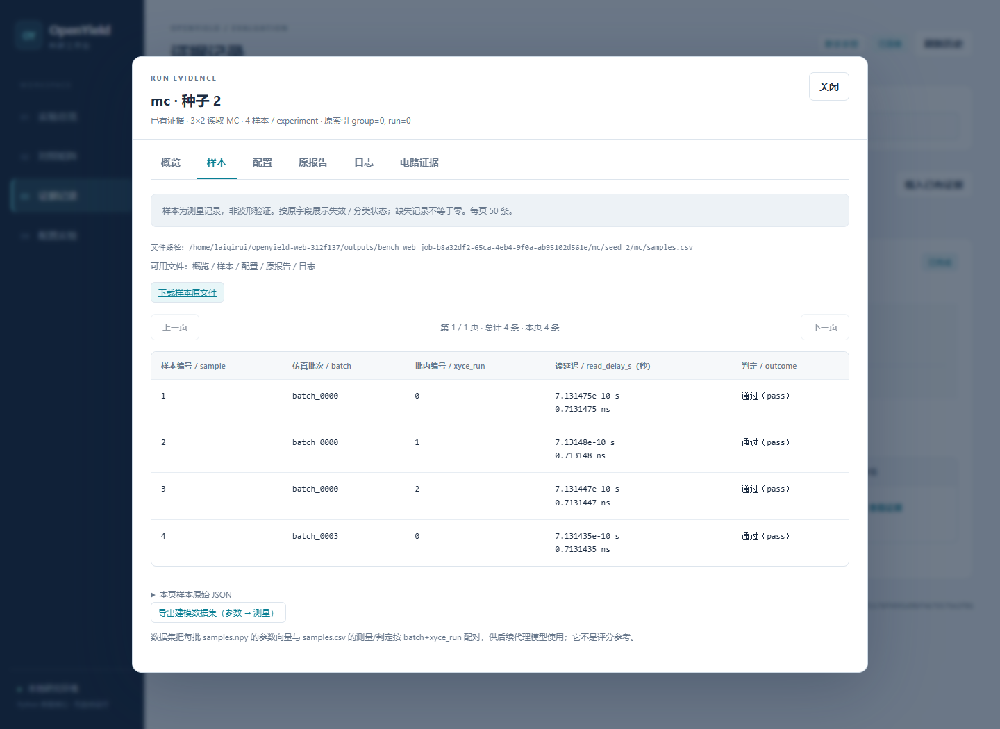
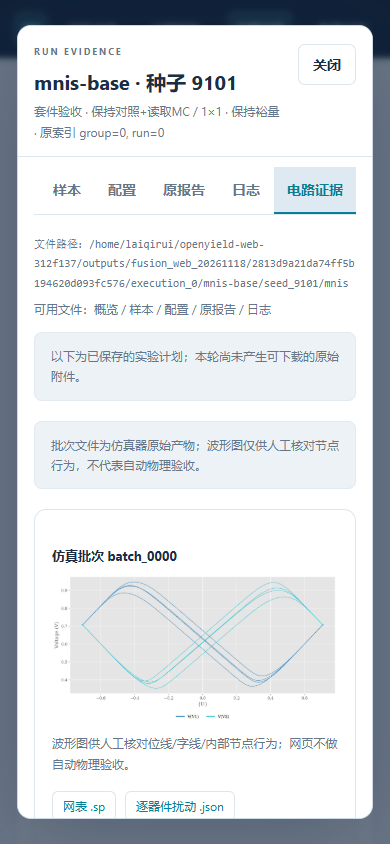
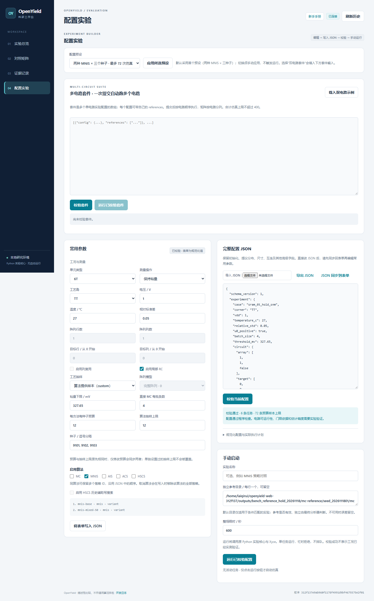
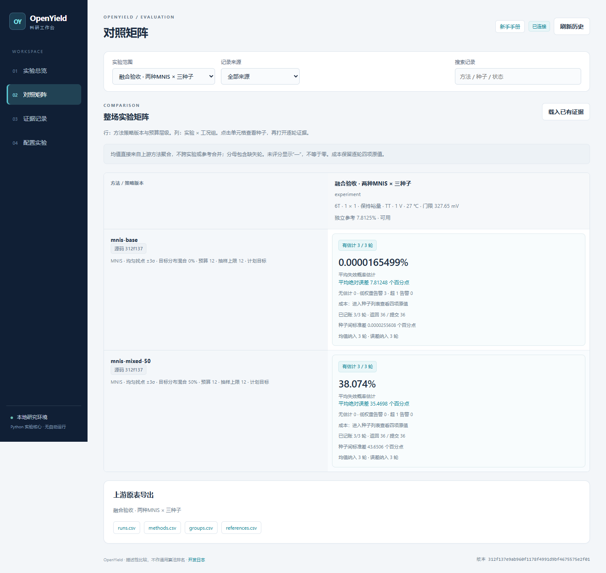
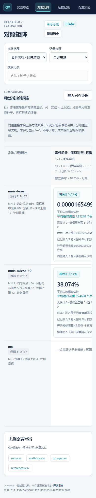

01 先用五分钟认识网站
这个网站不是电路绘图软件，也不是“输入参数就保证正确”的自动判卷器。它是一张本地实验工作台：把电路实验配置交给已有算法和仿真程序执行，再把结果、成本和证据整理出来。
- 双击工程文件夹里的
Start-OpenYield-Fusion.cmd。 - 浏览器打开 http://127.0.0.1:8766/，看到“实验总览”。
- 在“实验记录”找到“已有证据 · 3×2 读取 MC · 4 样本”，点击该行的证据记录。
- 点击查看证据 → 样本，查看四条真实测量；切换到“配置”“原报告”“日志”了解数字从哪里来。
- 回到“对照矩阵”，在“实验范围”选择融合验收 · 两种MNIS × 三种子，点击一个格子查看三个种子，再逐轮打开证据。
本轮交付已经保存了一场六轮对照实验，实际新增了 72 条仿真。第一次使用可以先读这份结果，没必要为了看页面再运行一次。
02 网站究竟在研究什么
2.1 一块看起来相同的电路，为什么会有不同表现
SRAM 是一种常见的静态随机存取存储器。这里主要研究由晶体管组成的存储单元：能否及时读出数据，以及受到干扰时能否保持原来的数据。
实际制造中，各个晶体管的参数会有波动。即便电路结构相同，不同参数组合也可能得到不同的读取延迟或保持裕量。网站借助 Xyce 电路仿真器，在电脑中计算这些组合的表现，而不是在真实芯片上逐个测量。
2.2 “失效”是谁规定的
一次仿真产生的是测量值，是否失效还需要一条事先固定的判据。例如，读取延迟超过上限算失效；保持裕量低于下限算失效。二者方向相反，不能只记住“数值越大越好”或“越小越好”。
| 已使用的任务 | 测量量 | 本轮条件下的门限 | 怎样理解 |
|---|---|---|---|
| 3×2、6T 单元读取 | 读取延迟 | 1 ns 上限 | 检查读出是否够快；这里是指定任务的条件，不是所有 SRAM 的通用标准。 |
| 1×1、6T 单元保持 | 保持静态噪声容限，即保持裕量 | 327.65 mV 下限 | 检查在静态干扰下保留数据的余量；门限沿用当前研究配置。 |
失效率是按目标制造分布生产时发生失效的概率；良率通常可理解为 1 − 失效率。本网站主要比较的是不同算法估计这个概率的表现，不是把失效率最小的算法选为冠军。
2.3 仿真值、参考值、算法估计不是同一个东西
- 单次仿真响应：一组参数对应的延迟或裕量。文档中的 Oracle，可理解为提供这种可核对响应的仿真查询入口。
- 算法估计：结合多次抽样、仿真和必要的权重，给出整个目标分布的失效概率估计。
- 独立参考：另外运行的一批直接 MC 样本，用来比较被测算法的估计。参考也有统计不确定度，不能称为毫无误差的真值。
03 算法与常用词解释
第一次使用无需记住算法公式。先知道它们为什么存在，以及哪些数字不能混淆。
| 名称 | 通俗解释 | 使用时注意 |
|---|---|---|
| MC 蒙特卡洛抽样 | 按目标制造分布随机抽取参数，一次次仿真，统计发生了多少失效。 | 做法直观，但遇到非常少见的失效可能需要大量样本。小样本没有发现失效不表示概率为零。 |
| MNIS 单中心重要性采样 | 先找容易失效的区域，再更集中地在那里抽样；用权重修正抽样偏向，估计原目标分布的失效率。 | 不能直接用“失效样本数 ÷ 样本总数”代替它的加权估计。权重诊断非常重要。 |
| MNIS 50% 混合 | 当前对照里，正式抽样有 50% 的机会从目标制造分布抽取，另一部分按重要性采样策略抽取。 | 它不是把两个失效率简单取平均，也不是保证精度更高的开关；具体设置保存在 JSON 中。 |
| AIS 自适应重要性采样 | 根据已得到的信息，调整后续重点抽样的分布。 | 这里指当前仓库实现。设置、预算和版本不同，不能当成同一条研究结果。 |
| ACS 累积失效点采样 | 利用累积发现的失效点组织后续重点抽样。 | 是否与某篇论文的全部细节等价，需要单独核对，不由网页界面保证。 |
| HSCS 分组与方向搜索 | 借助分组和搜索步骤寻找与失效有关的区域，再进行估计。 | 搜索也消耗预算。读取任务可能涉及辅助写搜索，不建议新手直接修改这类高级条件。 |
| TabPFN 计划中的代理模型 | 使用已有样例预测新的参数组合表现，以期减少昂贵的真实仿真。 | 当前融合版未接入。页面中的本机实验不是它的预测结果，也不需要因此配置 GPU。 |
| 常用词 | 含义 |
|---|---|
| 随机种子 seed | 控制随机抽样起点的编号。在相同代码、条件与环境下，便于重复检查；它不是样本数量。 |
| 一轮 / 一场 | 一轮是某个方法策略在某个种子下的一次执行；一场通常包含同工况下多个策略和多个种子。 |
| 预算 | 允许使用的计算数量上限。当前预设按 Xyce 样本记账，找点、复测、搜索也可能占用预算。 |
| 算法抽样上限 | 限制算法提出多少次抽样请求。请求未必全部送入 Xyce，所以它与实际仿真数是不同口径。 |
| 策略 / estimator ID | 同一个算法可以有不同初始化、选点或混合比例。每个策略有独立名称，例如 mnis-base 与 mnis-mixed-50。 |
| JSON | 一种可保存完整配置的文本文件。网页表单是便于填写的界面，实际提交以 JSON 为准。 |
| CSV | 可用 Excel 等软件打开的表格文件。网站提供逐轮记录、方法汇总、条件检查和参考来源四张分析表。 |
| 工况 | 一起规定电路、操作、温度、电压、制造波动和失效门限的实验条件。不同工况不能随意合成一个平均数。 |
| 6T / 10T | 存储单元的结构类型，名称通常对应单元内晶体管数量；与数组的行列数不是同一个概念。 |
| TT 等工艺角 | 描述器件整体偏快、偏慢或典型情况的模型条件。当前验收使用 TT；新手可先保持默认。 |
| σ / 相对标准差 | 描述参数波动的尺度。±3σ 是某些初始找点范围，不等于已经覆盖所有可能的制造波动。 |
| 版本 / SHA-256 | 版本标记代码出处；SHA-256 是用于核对文件是否改变的摘要值，不是性能分数。 |
04 启动与页面导航
4.1 第一次从哪里打开
本机工程目录：
D:\one drive\OneDrive\25自动化\学期任务\第三学期\自动化专业英语\JCIE报名\评测网站\openyield-fusion
- 用 Windows 文件资源管理器进入上述目录。
- 双击
Start-OpenYield-Fusion.cmd，等待服务就绪和浏览器打开。 - 如果浏览器没有自动出现，手动访问 http://127.0.0.1:8766/。
- 看到“OpenYield 科研工作台”和“已连接”，表示网页能够联系本地服务。该标记本身不是每种电路、每个算法的运行认证。
这台电脑已有 WSL Ubuntu、Python 和 Xyce 环境。正常使用不需要再次安装。启动有错误时先保存报错并查看日志，不要直接重装环境。
127.0.0.1 只代表当前电脑，不是可以发给其他电脑访问的公网地址。4.2 三种运行形态：完整 / 演示 / 静态
| 形态 | 启动方式 | 能做什么 |
|---|---|---|
| 完整模式 | 双击 Start-OpenYield-Fusion.cmd（需本机 OpenYield + Xyce 环境） | 校验、提交真实仿真、套件、分析、证据查阅。 |
| 演示模式 | python server.py --demo demo_data --port 8767（只需 Python 标准库） | 只读浏览随仓库分发的真实证据包；不能运行仿真。 |
| 静态站点 | 直接打开 demo_site/index.html，或部署到 GitHub Pages | 与演示模式相同的只读体验，无需任何服务；适合发给老师/同学直接看。 |
演示与静态形态页面顶部会显示“演示模式”横幅，运行/校验按钮被禁用。它们展示的是真实实验的精简证据子集（每轮保留首个批次的电路文件），不是模拟数据。
4.3 四个页面分别做什么
| 页面 | 用途 | 常用动作 |
|---|---|---|
| 实验总览 | 查看保存了哪些实验、是否仍有活动任务、哪些结果已经分析。 | 打开任务详情；进入矩阵或证据；载入已有清单。 |
| 对照矩阵 | 在同一画面查看方法策略、实验工况、平均估计、误差、波动和成本。 | 点一个格子，进入该策略的种子列表。 |
| 证据记录 | 直接查看每一轮的状态、估计、参考和原始文件。 | 搜索种子或方法；打开五个证据页签。 |
| 配置实验 | 选择预设、编辑表单或 JSON、校验、查看计划，然后手动运行。 | 导入/导出 JSON；保留同算法多个策略。 |

页面上方的实验范围选择一场或全部已有分析；记录来源区分本地实验和其他导入证据；搜索记录可以输入方法、种子或状态。筛选只改变显示，不改变统计时的原计划分母。
05 先查看已有实验，不花新的仿真成本
5.1 使用已经载入的三场记录
交付时的记录包括两份旧证据和一场新验收实验：
- 已有证据 · 3×2 读取 MC · 4 样本：适合学习看测量值和原报告。
- 已有证据 · 保持 MNIS · 低权重记录：适合学习看独立参考和权重告警。
- 融合验收 · 两种MNIS × 三种子：适合学习矩阵、重复实验和策略对照。
- 在“实验总览”找到对应行，点击证据记录。
- 检查页面上方“实验范围”是否已经选择这场实验。
- 先看工况、参考来源和总轮数，再看每轮的估计。不要只看一个百分数。
5.2 从已有目录载入其他结果
- 回到“实验总览”，找到载入已有证据。
- 已有快捷条目可以直接点击载入证据。没有列出的清单，可把完整路径填到下方“结果清单路径”。
- 提交的是
analysis_manifest.json，即说明哪些轮次和参考需要参与分析的清单，不是实验配置 JSON。 - 等待分析结束。网站会创建一条新的分析记录，并写入新的输出目录；它不会因此重跑 Xyce，也不会覆盖旧报告。
06 打开样本和原始证据
在“证据记录”点击某轮的查看证据；或者从矩阵点格子、进入种子列表，再点击某轮的“查看证据”。弹窗标题应显示方法和种子，先核对自己打开的是哪一轮。
| 页签 | 看什么 | 能回答的问题 |
|---|---|---|
| 概览 | 原始估计、误差、独立参考、四类计数、告警、源码和文件来源。 | 数字能不能用于当前比较？有没有异常？用了哪份参考？ |
| 样本 | 逐样本测量、批次、原始判定；每页 50 条，支持上/下页。 | 测到了什么？哪些样本被判定失效？ |
| 配置 | 整场实验输入、该轮计划，以及实际记录的配置（如果已产生）。 | 算法版本、混合比例、初始化和种子是什么？ |
| 原报告 | 仿真/估计程序生成的报告原文。 | 有没有程序提供的诊断和补充指标？ |
| 日志 | 该轮进程日志；过长时展示尾部并明确提示截断。 | 在哪一步出错或停止？是否需要下载完整日志排查？ |

6.1 样本单位怎么读
read_delay_s：读取延迟，原值单位是秒。1 ns = 10⁻⁹ s。hold_snm_v：保持裕量，原值单位是伏。1 mV = 10⁻³ V。outcome：原程序记录的判定；pass为通过，fail为失效。未判定不能当作通过。batch是批次，xyce_run是批内编号；它们不是整个实验的随机种子。
6.2 文件缺失时怎么办
页面会明确显示文件尚未产生或当前证据没有包含该文件。缺文件不是零值，也不能证明任务完成。即使某轮没有得到结果，冻结计划中的配置仍可能可查；这种情况下不会出现一个实际上不存在的原文件下载链接。
需要交给协作者排查时，优先保存：实验名称、策略名称、种子、配置、报告、日志，以及相关样本行。网页里的路径是定位文件用的线索；Linux 路径以 /home/... 开头，在 Windows 中需要通过资源管理器的 \\wsl.localhost\Ubuntu\ 入口查看。
6.3 电路证据页签：看波形和网表，而不只看数字
切换到电路证据页签，可以看到该轮每个仿真批次的原始产物：波形图（*_waveform.png）、网表（.sp）、逐器件扰动（*.variation.json）以及批次统计/调试 CSV。波形图直接在页面显示，网表与扰动可下载。

6.4 建模数据集导出：参数 → 测量
在样本页签点击导出建模数据集（参数 → 测量），得到 dataset.csv：每行是一个样本，列包括策略、种子、批次、批内编号、全部器件参数（param_000…）、测量值与判定。它把批次里的 samples.npy 参数矩阵与 samples.csv 测量按 batch+xyce_run 配对，正是后续代理模型（如 TabPFN）需要的“输入 X → 输出 Y”原始数据。
注意：这份数据集是建模原料，不是评分参考。用于训练/上下文样例的数据与用于评测的数据必须分开，不能混用后宣称泛化精度。
07 亲手运行第一个小实验
如果只想熟悉浏览功能，前面的已有结果已经足够。确实需要练习提交时，建议先用MC 保持、单种子、4 样本，而不是直接运行全部算法。
- 点击左侧配置实验。
- 在“配置预设”选择MC 保持 · 单种子 4 样本检查，然后点击应用所选预设。只切换下拉框不会修改当前 JSON。
- 暂时保留默认电路、门限、温度、电压、预算和种子。
- 在“手动启动”区域填一个好认的实验名称，例如“我的第一次 MC 保持检查”。保留默认独立参考目录和 600 秒整场限时；名称、参考和限时应在最后校验前填好。
- 点击校验当前配置。预览应为1 条任务、最多 4 条预算样本。
- 按需展开规范化配置与实际执行计划，确认方法、种子、预算与预期一致。
- 点击运行已校验配置。这是本流程中真正启动 Xyce 的一步；网页随后进入实验总览。
- 等待状态更新。结束后进入“证据记录”，查看这轮的结果、样本与日志。
7.4 多电路套件：一次提交自动跑多个电路
单电路预设之外，配置页还有多电路套件面板。套件是多个单电路实验配置的数组，每项可带自己的独立参考目录。点击“载入双电路示例”会得到“1×1 保持对照（6 轮）+ 3×2 读取 MC（1 轮）”。
- 在套件面板校验：预览会列出每个电路工况的轮数与仿真上限（示例合计 7 轮、上限 76）。
- 点击“运行已校验套件”。服务按电路顺序执行，每个电路独立保存执行目录与分析。
- 完成后矩阵按电路分列：同一画面看到保持与读取两列、各方法策略行。这正是“提交一个算法就自动测试它在各电路上有多准”的形态。
套件合计仿真上限不超过 400；整场限时默认 1800 秒。某个电路失败不会抹掉其他电路已得结果，矩阵中该列仍保留并标注状态。
哪些地方不要随手改
新手先保持默认工况和判据。特别不要为了得到更漂亮的结果随意调整失效门限、制造波动、电压或温度；这些修改会改变实验问题，也可能使默认参考失去适用性。
预算是数量上限，不是预计秒数。整场限时是另一道保护。不同电路、操作和算法的耗时不同，不能用某次四样本的耗时推算所有实验。
08 运行两种策略的对照
8.1 默认六轮计划是什么意思
默认预设是“两种 MNIS × 三个种子”，只针对一套相同的保持工况。
| 策略 ID | 种子 | 每轮预算 | 有意改变的设置 |
|---|---|---|---|
| mnis-base | 9101、9102、9103 | 12 | 正式抽样的目标分布混合比例为 0。 |
| mnis-mixed-50 | 9101、9102、9103 | 12 | 正式抽样的目标分布混合比例为 0.5。 |
因此，2 个策略 × 3 个种子 = 6 轮，总仿真上限为 6 × 12 = 72。初始找点规则和种子编号沿用相同设置，不能在修改混合比例的同时又悄悄换一套选点规则。
8.2 操作顺序
- 选择“两种 MNIS × 三个种子”预设并应用，或导入已经保存的完整对照配置。
- 填写实验名称、参考目录和整场限时。
- 如果改过常用表单，先点击将表单写入 JSON；如果直接改过 JSON，继续编辑表单前先点JSON 同步到表单。
- 点击校验当前配置，检查确实是六轮、上限 72。
- 确认后再运行。不要在请求未确认时连续点击或重新提交；先刷新历史核对是否已收到。
- 完成后在矩阵选择这一场实验。应有两个策略格子，每个格子可以追到三个种子。

8.3 本轮实际验证了什么
本轮已从网页提交上述六轮。六轮各返回 12 条仿真，总计 72 条；每轮正式估计分母为 7，总计 42。差额并非样本丢失，而是其他阶段也占用预算。具体阶段与明细以每轮原报告和成本字段为准。
这批记录用来检查“导入/配置 → 校验 → 六轮执行 → 分组汇总 → 详情与下载”的完整链条。三次短预算结果不足以建立稳定的算法性能结论。
09 读懂矩阵和结果数字
9.1 行、列、格分别代表什么
- 行：某个方法策略、预算层级和源码版本。相同算法名字不等于完全相同的策略。
- 列：一场实验中的一组工况。切换“全部已有分析”可以并排查看多场，但网站不会把它们混成一个总平均。
- 格子：这组条件下该策略的多种子汇总。点击格子可以查到各个种子，而不是只能看到一个平均数。


格子中还显示耗时合计（各轮墙钟秒数之和，未知轮次单独标注）与种子间标准差，便于同时看准确度与计算成本。
| 字段 | 含义 | 不能怎样理解 |
|---|---|---|
| 有估计 3 / 3 轮 | 按上游规则，这组的三轮中有三轮产生了可记录的估计。 | 不是“可靠率 100%”，也不是三次都通过物理验证。 |
| 平均失效概率估计 | 符合工况和统计条件的线性估计的平均值；页面同时显示均值纳入几轮。 | 不是估计越小，算法越准确。 |
| 平均绝对误差 | 逐轮计算与适用独立参考的绝对差，再求平均，单位为百分点。 | 不是“平均估计减去参考”的绝对值；取绝对值与取平均的先后不同。 |
| 种子间标准差 | 描述多个独立重复结果的离散程度，页面按百分点表示。 | 不是 MC 参考的置信区间，也不能凭三轮就断言稳定。 |
| 无估计 / 告警 | 保留没有有效估计的轮次、低权重和异常提示。 | 不能删掉失败轮次后仍称为原计划的全部结果。 |
| 已记账 / 返回 / 提交 | 当前策略中有记录的实际计算数量之和；未知计数会被区分。 | 没有记录不按 0 处理；返回数不等于正式估计分母。 |
| — / 未评分 | 没有适用参考，或没有符合规则的估计等情况。 | 不是误差为零，也不是通过。 |
9.2 百分数与百分点
9.3 四种数量为什么不同
- 算法请求：算法提出的抽样数量。
- Xyce 提交：实际交给仿真器的数量。
- Xyce 返回：已经返回记录的数量。
- 正式估计分母：正式估计阶段使用的计数口径。它不是初始找点、搜索等所有记录的简单总数。
重要性采样还使用权重。不要拿上面的某两个数相除，试图替代页面中上游算法给出的失效率估计。
9.4 本机独立参考怎么读
当前保持任务的本机参考是独立种子生成的 128 条 MC，其中 10 条失效，点估计 7.8125%；95% 区间约为 4.30%–13.78%。它是一批有限样本的参考，区间体现了不确定度。
旧协作资料里的 142/1024、约 13.867% 属于另一批参考。二者不能在不同格子里混用后再作统一排名。本版每组都显示采用哪份参考；3×2 读取旧任务当前没有适用独立参考，因此不填误差。
9.5 至少避免以下六种误读
- 0% 不等于真正零失效。尤其是 MC 只有四条样本时。
- 没有告警不等于准确。本轮混合 MNIS 没有低权重告警，但三个短预算结果仍然有明显波动。
- 估计很稳定不等于没有偏差。多个极小值可能都离适用参考很远。
- 预算停止不等于程序失败。先看是否已经产生有效估计和完整记账。
- 参考可用不等于来源完整。页面若提示来源验证不完整，需要继续检查。
- 一场小实验不能决定通用排名。正式性能比较还需要更充分预算、重复实验、独立参考和合适的电路题库。
10 JSON 与高级参数：需要时再看
10.1 表单、输入 JSON、规范化配置的关系
网页的常用表单只覆盖一部分字段。完整 JSON 保存初始化、选点、抽样范围、混合比例、尺寸和互连等更细的设置。运行以通过校验的 JSON 为准，不以未写入的表单为准。
- 改了表单：点“将表单写入 JSON”，再校验。
- 直接改了 JSON：可以直接校验；若要回到表单编辑，先点“JSON 同步到表单”，避免旧表单覆盖新输入。
- 规范化配置：Python 解析和补齐规则后的实际配置。展开“规范化配置与实际执行计划”可以核对它与自己的输入。
- 校验通过：只说明程序接受这份配置，不能证明某个新电路已经成功仿真或符合物理预期。
10.2 多策略不能被简化成算法复选框
同一份 JSON 里可以有两项都写着 algorithm: mnis，但它们的 id 和策略不同。网页保留这些条目及原顺序。修改共同预算时，不会把两个策略缩成一个。
取消算法复选框再写入 JSON，会移除这个算法的全部策略；因此比较两个 MNIS 时应保持 MNIS 勾选。不要把它理解为“只取消其中一个 MNIS 版本”。若要只删一个版本，应明确编辑 JSON 中相应的策略条目。
10.3 预算与抽样上限
预算口径由 budget_unit 定义。上游要求：按算法抽样记账时，抽样上限与预算相等；按 Xyce 样本记账时，算法抽样上限不能低于物理仿真预算。
如果两者原先相同且只修改预算，表单写入时会同步两者。若单独编辑过抽样上限，网站保留你的设置，让上游校验是否成立。某个策略的找点上限等高级参数仍按原值保存，不会为了通过校验悄悄修改。
10.4 新电路与其他操作
配置入口保留 6T/10T、读写延迟、保持/读/写裕量等选项，以及阵列规模、目标单元和模型设置。能选择或校验通过，不代表所有组合已经实测。新手优先使用已经核验的 1×1 保持和已有 3×2 读取记录。
当前一份完整实验配置对应一套共同工况。需要比较多个电路时，分别建立相应实验，再在矩阵中查看；不能把“同一个 JSON 支持多个种子”误解为“可以直接塞进任意多个电路”。
想复现时，最少保存哪些信息
- 原始 JSON、规范化配置、策略 ID 和种子列表。
- 预算口径、整场限时、门限、电路、温度、电压、参数波动定义。
- 源码版本、模型与求解器来源，以及使用哪份独立参考。
- 冻结计划/分析清单、四张分析表、各轮报告和原始样本。
只保存一个截图不足以复现。导出的实验 JSON 不包含名称、参考目录和整场限时等所有网页外层信息，这些还应结合“任务详情”与服务端记录保存。
11 下载、保存、停止与恢复
11.1 四张分析表
在矩阵下方、证据组下方或任务详情中，点击对应文件名即可下载。
| 文件 | 内容 | 常见用途 |
|---|---|---|
| runs.csv | 每种策略、每个种子的逐轮结果。 | 定位异常种子、检查成本、查逐轮估计。 |
| methods.csv | 按目标、策略与预算整理的方法汇总。 | 核对矩阵均值、误差、标准差和有效轮数。 |
| groups.csv | 整组的条件匹配、来源、预算等检查。 | 确认这些记录是否有可比性问题。 |
| references.csv | 采用的独立参考与来源检查。 | 说明误差基于哪份参考，参考是否适用。 |
样本、配置、报告、日志的原文件在各自证据页签下载。CSV 是 UTF-8 文本；若 Excel 直接打开中文显示异常，可用“数据 → 从文本/CSV”并选择 UTF-8 编码导入。
11.2 本版数据放在哪里
| 位置 | 用途 |
|---|---|
| Windows 的 openyield-fusion | 网页代码、启动/停止文件、本手册、开发日志。 |
| 工程内 artifacts | 本轮测试结果、验收截图和下载核对文件；不是所有未来实验的唯一存放处。 |
| WSL 固定副本下 outputs/fusion_web_20261118 | 融合版的任务记录、输入、执行目录和分析结果；网站重启时据此读取历史。 |
| 旧 bench_web_* 与参考目录 | 旧实验及独立参考的原始证据。载入分析后仍会引用它们，不应随意移动或删除。 |
/home/laiqirui/openyield-web-312f137/outputs/fusion_web_20261118/
每条任务有自己的子目录，通常包含 job.json、request.json、launch.json、launcher.log、execution/ 和 analysis/；只分析已有结果的任务不一定有全部执行文件。
11.3 取消与停止
- 取消单场仿真：在实验总览或任务详情点击“取消任务”。服务向本场子进程发送停止请求，保留已经写入的文件，状态不会冒充完整成功。
- 只关闭网页：不会自动停止后台计算。
- 停止融合版服务：优先等当前实验结束，再双击
Stop-OpenYield-Fusion.cmd。如果仍在运行，停止操作会请求取消当前任务。 - 下次打开：再次双击启动文件。已经保存的任务与结果可恢复查阅，不需要为了恢复页面重新仿真。
本版暂不提供排队。异常退出或断电后，恢复历史不等于自动断点续算；“服务中断，待核对”表示需要检查原进程和原文件，不要未经确认再启动同一场大实验。
12 常见问题与交付边界
| 现象 | 建议处理 |
|---|---|
| 网页打不开 | 先双击融合版启动文件，核对端口是 8766。查看工程 artifacts/server.stderr.log 的错误，不要误开原站或直接重装。 |
| 校验成功后运行按钮仍不可用 | 检查是否改过名称、参考或其他字段，或是否有活动任务。完成全部修改后再校验一次。 |
| 提示先将表单写入 JSON | 表单与输入文件还没有同步。先写入，再校验；若 JSON 才是最新内容，先用“JSON 同步到表单”。 |
| Draw limit does not agree... | 预算与算法抽样上限不符合当前预算口径。按 Xyce 预算时，抽样上限至少等于预算；不要改策略来掩盖这个输入问题。 |
| 出现候选不足或没有正式样本 | 预算可能耗在找点/搜索阶段。查看原报告中的阶段计数，不把“没有估计”当作零失效。 |
| 预算停止，但又显示有估计 | 这可以是正常情况。用完预算后停止，不妨碍已经得到一份可记录的估计；其可靠性还要看告警、样本量与参考。 |
| 误差栏是横线 | 检查独立参考、工况和估计有效性。3×2 读取旧证据没有适用独立参考，留空是预期行为。 |
| 低权重告警 | 先保留告警和结果，查看权重诊断。它可能意味着重要性采样没有充分覆盖目标分布；不能只因程序正常退出就忽略。 |
| 估计超过 100% 或只剩对数值 | 保留异常/数值诊断，不把它强制截成漂亮的 100% 或 0%。查原报告，再判断是否能用于线性误差比较。 |
| 参考种子与实验种子相同 | 被测样本与参考必须独立。更改实验种子或登记真正独立的参考；不要删掉独立性校验。 |
| 源码版本变化或有未记录修改 | 先核对代码来源。融合版有意拒绝静默换算法版本，不应删除版本检查来强行运行。 |
| 矩阵没有所选方法 | 先清空搜索，选“全部来源”和正确实验范围。该实验未运行的策略不会被伪造一个零值格子。 |
| 下载或证据读取失败 | 看页面错误、原文件位置及是否发生过移动。若摘要已变化，重新分析，避免表格与详情对应不同版本。 |
| 请求超时，不知道是否提交成功 | 先刷新历史，查刚才的实验名称和状态。不要立即再次点击运行，避免重复消耗预算。 |
| 手机或窄窗口只看见部分列 | 在表格区域横向滚动；完整表保留原列，不将数据挤成一列。配置输入建议在电脑上进行。 |
目前可以使用的能力
- 完整 JSON 与常用表单、预设、多策略、多随机种子的配置和校验。
- 网页提交一场真实实验，或多电路套件一次提交自动跑多个电路；查看状态、保留结果及基本取消操作。
- 已有实验清单的只读分析、历史查阅、按电路分列的矩阵和逐轮证据。
- 原始样本、配置、报告、日志、批次波形/网表/扰动及四张分析表下载。
- 参数→测量建模数据集导出，供后续代理模型使用。
- 重启后恢复已保存记录；不自动重跑未知状态的计算。
- 三种形态：完整模式、零依赖演示模式、可放 GitHub Pages 的静态只读站点。
当前没有承诺的能力
- 任意 Python 算法代码上传、团队账号、任务排队，以及带真实仿真的公网服务（静态演示可公开，但不能在公网跑 Xyce）。
- TabPFN 预测服务、GPU 常驻加速，以及预测数据与真实数据的自动联合评测。
- 全部电路组合的实测认证与电路功能自动验收（波形/网表已可查，但是否正常仍需人工核对）。
- 用三粒种子或小预算建立通用算法排名。